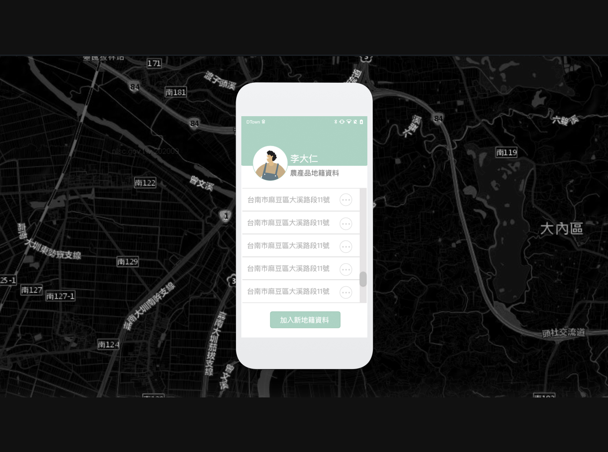

農產品地籍資料登錄
- 專案類別: App UI設計
- 設計年份: 2020年
- 作品背景: 公司專案
- 我的職責: UI設計
設計理念
為了使臺灣農產品的產地溯源更加確實，委任單位希望能夠從登記土地資料開始，與農作物做連結，將數據都儲存至資料庫，以利更好的溯源。

介面設計上，因考量到使用者偏年長，所以盡量單畫面都只有一個功能，讓操作上不會因有有太多圖示而不知如何操作。功能敘述也以文字為主，避免圖示意義不明。 一個使用者有多個地籍，每個地籍也因季節而可以栽種不同的農作物。